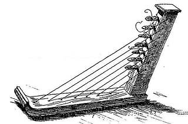

The harp is approximately 5000 years old, and tomb illustrations from Ancient Egypt show one of the oldest types of the harp, which is the arched harp. The arched harp had 6-12 strings, and the soundboard was made of wood or animal skin, often decorated with a carving. This harp formed a crescent-shaped arch with the body of the harp. The harpists would play the arched harp while sitting, the soundbox of the harp resting on the ground and the upper part of the harp leaning against the shoulder of the harpist. The arched harp was used together with other musical instruments, such as the lute, drum, and double pipe. At the time, the harp was only played at religious festivals, unlike later harps that were used at dances as well.

Around 2000BC, a new type of harp thought to have originated in Asia appeared. This was called the angular harp, and it had a straight neck at a sharp or right angle to the body. The angular harp had a suspension rod which was covered in leather, and it was connected to the soundbox. The strings of the harp were attached to the suspension rod at one end, and wound round the neck and tied to pieces of twine at the other end. This harp was easier to tune than the arched harp, and had up to 20 strings.
In the 8th century AD, the harp got to Ireland and Scotland, possibly from Scandinavia. It later spread to the European mainland where it replaced the lyre. These harps can still be found in Ireland and France, and are from the 14th century. This European harp was also known as a frame harp, which had a front pillar frame that formed a triangle together with the soundbox and neck. The harp's strings were stretched between the neck and soundbox, and in the earlier versions of this harp there were between seven and nine strings, while the later models had between 20 and 25 strings.